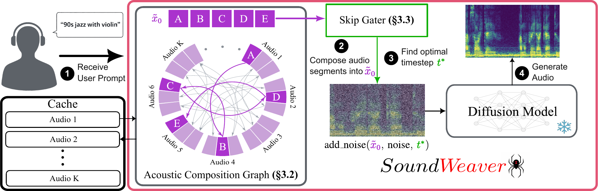

SoundWeaver: Compositional Warm-Starting for Text-to-Audio Diffusion Serving
Preprint, under review
1University of Illinois Urbana-Champaign (UIUC), 2Assured Intelligence

In short
SoundWeaver makes text-to-audio (T2A) diffusion models generate audio faster, with no retraining. Instead of starting every request from pure noise, it stitches together segments of cached audio clips that match the new prompt, then starts diffusion partway through so the early denoising steps can be skipped. An Acoustic Composition Graph picks which cached segments to join so the result fits the prompt and sounds continuous, and a contextual-bandit Skip Gater decides how many steps each request can safely skip. With a cache of only 1,000 clips, SoundWeaver speeds up generation by 1.48–3.74× while also improving audio quality.
Abstract
Text-to-audio (T2A) diffusion models generate high-quality audio but require tens of neural function evaluations (NFEs), resulting in substantial inference latency. Existing acceleration methods primarily optimize each generation trajectory independently, even when reusable acoustic structure exists in prior examples. We introduce SoundWeaver, the first training-free framework for compositional cross example acoustic reuse. Rather than generating from pure noise, SoundWeaver constructs a prompt-conditioned acoustic prior from segments distributed across cached audios and warm-starts diffusion from an intermediate noise level. We introduce an Acoustic Composition Graph (ACG), which uses neural codec representations and segment-level identification to identify candidate cross-cache transitions and structured path search to jointly optimize prompt relevance and acoustic continuity. We further establish a warm-start error bound showing how prior quality and diffusion SNR jointly govern the admissible skip depth, motivating an adaptive contextual-bandit Skip Gater that selects the warm-start level for each request. Across T2A diffusion backbones, SoundWeaver achieves 1.48-3.74x generation speedup with only a 1K-clip cache while improving generation quality.
Citation
@article{barik2026soundweaver,
title={SoundWeaver: Compositional Warm-Starting for Text-to-Audio Diffusion Serving},
author={Ayush Barik and Sofia Stoica and Nikhil Sarda and Arnav Kethana and Abhinav Khanduja and Muchen Xu and Fan Lai},
journal={arXiv preprint arXiv:2603.07865},
year={2026}
}